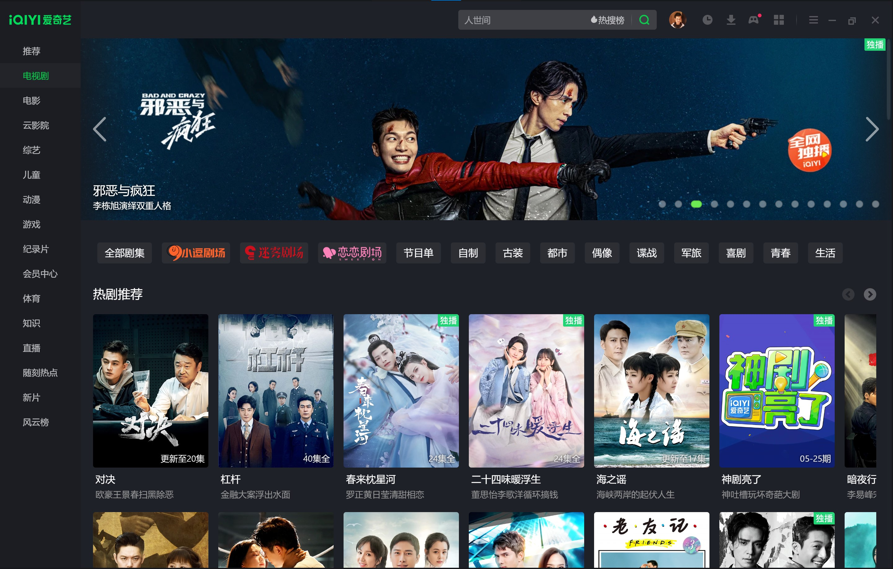

Kingcean
.org
Blogs
CompositeJs
12D Labs
< Back to homepage
| Project at iQIYI Inc
iQIYI Windows client app
iQIYI is a video streaming platform with movies, TV series, shows, etc.
This project is about its Win32 app which is developed by C++ and web native (React Native on Type Script).
iQIYI
- Microsoft Store page
Screenshots

Captured on May 26
th
2022, version 9.6.158.
Architecture
Web native PC app